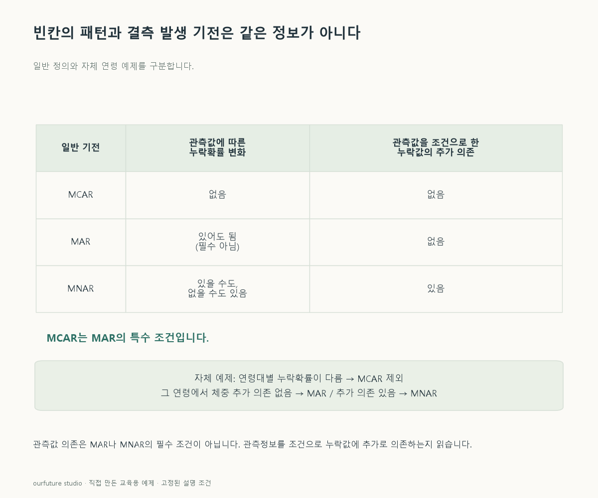

조건을 바꾸며 확인하기
알려 준 발생 규칙을 분류한다. 실제 빈칸 표에서 기전을 추정하거나 대치법을 선택하는 검사는 아니다.
설명 그림과 비교하기
아래 그림과 표는 고정된 설명 예제입니다. 기본·변형 중 어떤 조건인지 캡션을 읽고, 바꾼 입력의 결과는 계산 칸에서 확인하세요.

같은 문제를 직접 골라 보기
연령은 모두 관측됐다. 체중 누락 확률은 연령대별로 서로 다르고 관측된 연령에만 의존한다. 연령을 조건으로 하면 실제 체중에는 의존하지 않는다.
조건을 더 바꾸면?
같은 연령 안에서도 실제 체중이 클수록 응답을 더 자주 거절하도록 규칙을 바꾸면?
변형 풀이 확인
MNAR에 해당하는 규칙이다.
관측된 연령으로 설명한 뒤에도 누락되는 체중 자체가 결측 확률에 영향을 준다.
빈칸을 보기보다 무엇이 빈칸의 확률을 바꾸는지 묻는다.